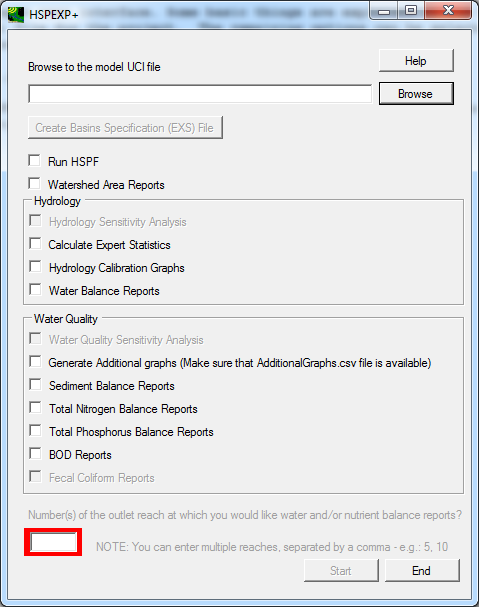

HSPEXP+ has a simple user interface. Some basic things are explained in the User Interface. User needs to browse to the uci file for the project. Rest of the options can be selected or deselected using check boxes.
Setting up HSPF project for analysis using HSPEXP+ is explained in the later sections.